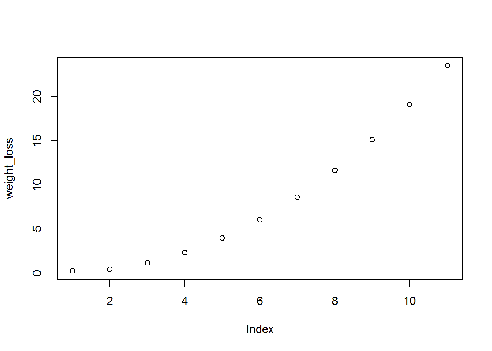
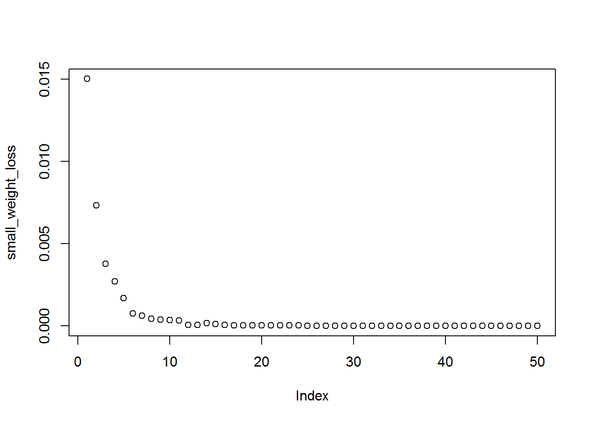
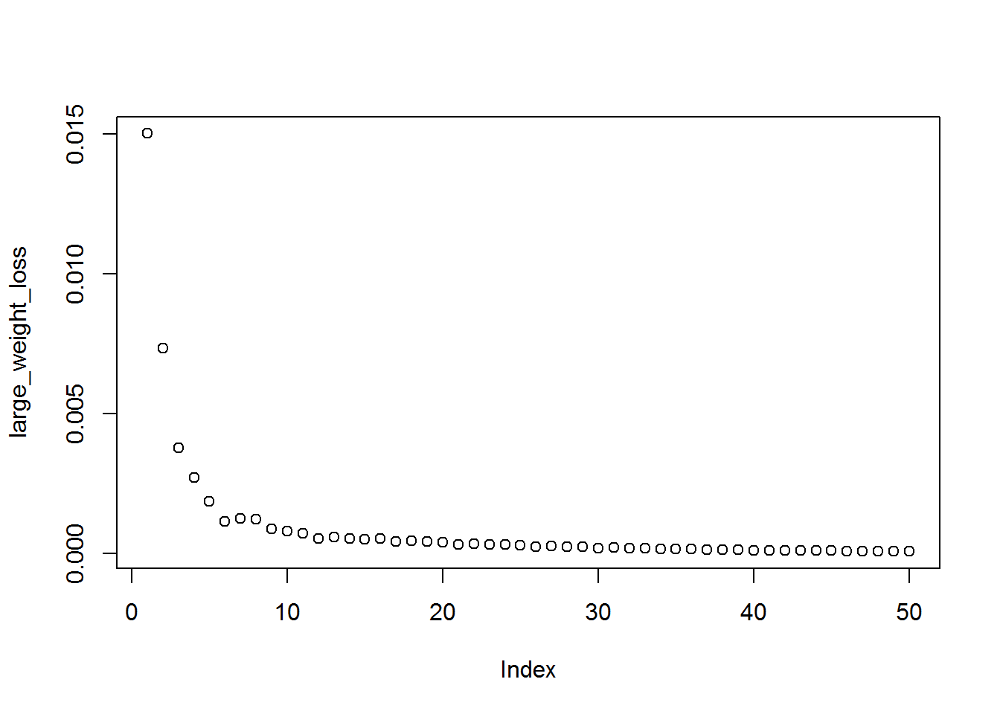

Weight-Parameter adjustment relationship
# This demo R code is to provide a demonstration of hyperparameter adjustment
# when scaling weights for appropriate learning
# As with any optimizers, bad parameters can impair performance
# Load library
library(lightgbm)## Loading required package: R6# We will train a model with the following scenarii:
# - Run 1: sum of weights equal to 0.06513 without adjusted regularization (not learning)
# - Run 2: sum of weights equal to 0.06513 with adjusted regularization (learning)
# - Run 3: sum of weights equal to 6513 (x 1e5) with adjusted regularization (learning)
# Setup small weights
weights1 <- rep(1/100000, 6513)
weights2 <- rep(1/100000, 1611)
# Load data and create datasets
data(agaricus.train, package = "lightgbm")
train <- agaricus.train
dtrain <- lgb.Dataset(train$data, label = train$label, weight = weights1)
data(agaricus.test, package = "lightgbm")
test <- agaricus.test
dtest <- lgb.Dataset.create.valid(dtrain, test$data, label = test$label, weight = weights2)
valids <- list(test = dtest)
# Run 1: sum of weights equal to 0.06513 without adjusted regularization (not learning)
# It cannot learn because regularization is too large!
# min_sum_hessian alone is bigger than the sum of weights, thus you will never learn anything
params <- list(objective = "regression",
metric = "l2",
device = "cpu",
min_sum_hessian = 10,
num_leaves = 7,
max_depth = 3,
nthread = 1)
model <- lgb.train(params,
dtrain,
50,
valids,
min_data = 1,
learning_rate = 1,
early_stopping_rounds = 10)## Loading required package: Matrix## [1]: test's l2:0.249665
## [2]: test's l2:0.482507
## [3]: test's l2:1.18021
## [4]: test's l2:2.34279
## [5]: test's l2:3.97022
## [6]: test's l2:6.06253
## [7]: test's l2:8.6197
## [8]: test's l2:11.6417
## [9]: test's l2:15.1286
## [10]: test's l2:19.0804
## [11]: test's l2:23.497weight_loss <- as.numeric(model$record_evals$test$l2$eval)
plot(weight_loss) # Shows how poor the learning was: a straight line!
# Run 2: sum of weights equal to 0.06513 with adjusted regularization (learning)
# Adjusted regularization just consisting in multiplicating results by 1e4 (x10000)
# Notice how it learns, there is no issue as we adjusted regularization ourselves
params <- list(objective = "regression",
metric = "l2",
device = "cpu",
min_sum_hessian = 1e-4,
num_leaves = 7,
max_depth = 3,
nthread = 1)
model <- lgb.train(params,
dtrain,
50,
valids,
min_data = 1,
learning_rate = 1,
early_stopping_rounds = 10)## [1]: test's l2:0.015004
## [2]: test's l2:0.00733572
## [3]: test's l2:0.00376968
## [4]: test's l2:0.00269737
## [5]: test's l2:0.0017028
## [6]: test's l2:0.000754526
## [7]: test's l2:0.000612458
## [8]: test's l2:0.000433644
## [9]: test's l2:0.00037502
## [10]: test's l2:0.000343423
## [11]: test's l2:0.000317457
## [12]: test's l2:6.40256e-05
## [13]: test's l2:4.83092e-05
## [14]: test's l2:0.000160781
## [15]: test's l2:0.000102254
## [16]: test's l2:6.40448e-05
## [17]: test's l2:4.31159e-05
## [18]: test's l2:3.45622e-05
## [19]: test's l2:2.92339e-05
## [20]: test's l2:2.67598e-05
## [21]: test's l2:2.99818e-05
## [22]: test's l2:2.8607e-05
## [23]: test's l2:2.67324e-05
## [24]: test's l2:2.48837e-05
## [25]: test's l2:2.02386e-05
## [26]: test's l2:1.93004e-05
## [27]: test's l2:1.88033e-05
## [28]: test's l2:1.37116e-05
## [29]: test's l2:1.28615e-05
## [30]: test's l2:1.45912e-05
## [31]: test's l2:1.04062e-05
## [32]: test's l2:8.28405e-06
## [33]: test's l2:7.53409e-06
## [34]: test's l2:6.80012e-06
## [35]: test's l2:6.60489e-06
## [36]: test's l2:6.27259e-06
## [37]: test's l2:5.7322e-06
## [38]: test's l2:5.22595e-06
## [39]: test's l2:6.30649e-06
## [40]: test's l2:5.44453e-06
## [41]: test's l2:4.76803e-06
## [42]: test's l2:4.57209e-06
## [43]: test's l2:4.27042e-06
## [44]: test's l2:4.39086e-06
## [45]: test's l2:3.46275e-06
## [46]: test's l2:3.18253e-06
## [47]: test's l2:3.14085e-06
## [48]: test's l2:3.01015e-06
## [49]: test's l2:2.38811e-06
## [50]: test's l2:2.22581e-06small_weight_loss <- as.numeric(model$record_evals$test$l2$eval)
plot(small_weight_loss) # It learns!
# Run 3: sum of weights equal to 6513 (x 1e5) with adjusted regularization (learning)
# To make it better, we are first cleaning the environment and reloading LightGBM
lgb.unloader(wipe = TRUE)
# And now, we are doing as usual
library(lightgbm)
data(agaricus.train, package = "lightgbm")
train <- agaricus.train
dtrain <- lgb.Dataset(train$data, label = train$label)
data(agaricus.test, package = "lightgbm")
test <- agaricus.test
dtest <- lgb.Dataset.create.valid(dtrain, test$data, label = test$label)
valids <- list(test = dtest)
# Setup parameters and run model...
params <- list(objective = "regression",
metric = "l2",
device = "cpu",
min_sum_hessian = 10,
num_leaves = 7,
max_depth = 3,
nthread = 1)
model <- lgb.train(params,
dtrain,
50,
valids,
min_data = 1,
learning_rate = 1,
early_stopping_rounds = 10)## [1]: test's l2:0.015004
## [2]: test's l2:0.00733572
## [3]: test's l2:0.00376968
## [4]: test's l2:0.00269737
## [5]: test's l2:0.00186089
## [6]: test's l2:0.00111794
## [7]: test's l2:0.00123277
## [8]: test's l2:0.00120069
## [9]: test's l2:0.00087376
## [10]: test's l2:0.000777554
## [11]: test's l2:0.000707629
## [12]: test's l2:0.000526292
## [13]: test's l2:0.000564568
## [14]: test's l2:0.000520694
## [15]: test's l2:0.000492974
## [16]: test's l2:0.000509947
## [17]: test's l2:0.000409418
## [18]: test's l2:0.000436754
## [19]: test's l2:0.000415116
## [20]: test's l2:0.000398686
## [21]: test's l2:0.000308853
## [22]: test's l2:0.000333474
## [23]: test's l2:0.000308576
## [24]: test's l2:0.000293586
## [25]: test's l2:0.000283788
## [26]: test's l2:0.000228984
## [27]: test's l2:0.000240609
## [28]: test's l2:0.000227057
## [29]: test's l2:0.000218103
## [30]: test's l2:0.000176547
## [31]: test's l2:0.000188157
## [32]: test's l2:0.000176642
## [33]: test's l2:0.000169261
## [34]: test's l2:0.000137216
## [35]: test's l2:0.000143953
## [36]: test's l2:0.000135986
## [37]: test's l2:0.000112708
## [38]: test's l2:0.000117918
## [39]: test's l2:0.000110817
## [40]: test's l2:0.000106353
## [41]: test's l2:0.000103378
## [42]: test's l2:8.72045e-05
## [43]: test's l2:9.12448e-05
## [44]: test's l2:8.61785e-05
## [45]: test's l2:8.30755e-05
## [46]: test's l2:7.0557e-05
## [47]: test's l2:7.39947e-05
## [48]: test's l2:7.09341e-05
## [49]: test's l2:6.19029e-05
## [50]: test's l2:6.39761e-05large_weight_loss <- as.numeric(model$record_evals$test$l2$eval)
plot(large_weight_loss) # It learns!
# Do you want to compare the learning? They both converge.
plot(small_weight_loss, large_weight_loss)
curve(1*x, from = 0, to = 0.02, add = TRUE)